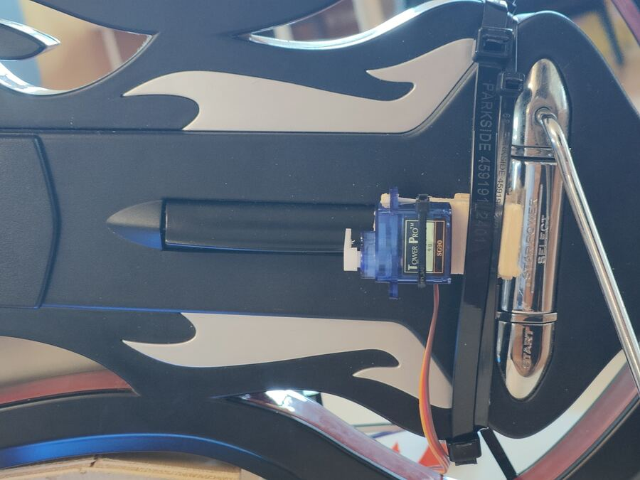
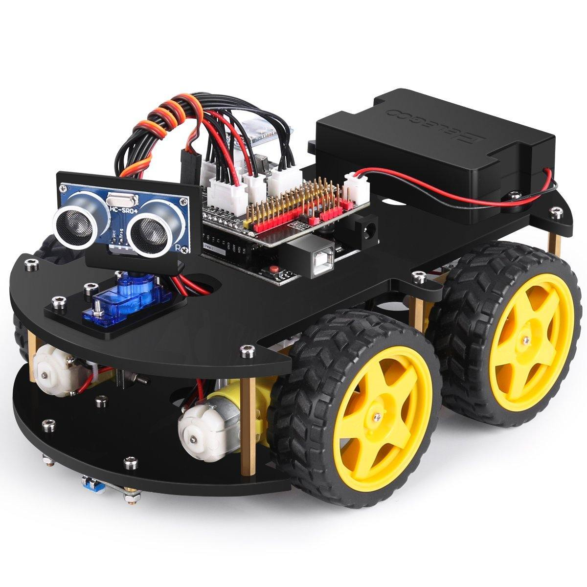
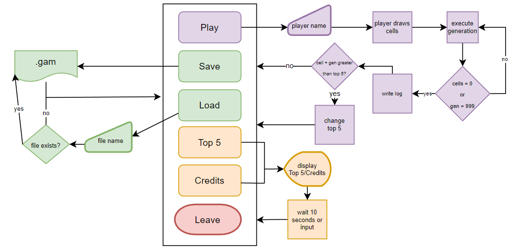

Projects
Things I built because I wanted to see them work. Newest first; the research projects are on the research page.
- Open-source contributions
- Guitar-playing robot
- Rocket air brakes
- Airplane Business
- Car mapping and navigation
- OpenGL experiments
- 3D modelling and printing
- University projects
- The Odin Project (web)
- Smaller things
Open-source contributions
PX4: fixed-wing aerodynamics and parameter tools
- What
- The tooling behind my YEF-ECE 2025 paper, offered back to PX4: enhancements to the AVL automation in PX4-gazebo-models, which turns a YAML description of an aircraft into a Gazebo model with real aerodynamic coefficients, and two tools for moving parameters between QGroundControl and PX4's simulation (QGC2ROMFS and ROMFS2QGC).
- Why
- Fixed-wing drones are hard to simulate faithfully; every new airframe meant hand-editing model files.
- PX4-gazebo-models #79 (open) · #61 (closed)
- PX4-Autopilot #24373 · #24374 (closed)
RomM: save sync with PlayStation consoles
- What
- A feature for RomM, a self-hosted ROM manager: RomM keeps the saves of a PS3 or PS4 on the local network in sync, both ways, over the console's FTP server (webMAN MOD on the PS3, GoldHEN on the PS4).
- How
- Each console type is a small profile (where profiles, games and saves live, what a valid save looks like); the FTP client, sync loop and polling are shared, so another console is one more profile. Only folders whose file listing changed are transferred; large PS4 save folders are streamed instead of held in memory; saves are only pushed back to the console that made them, because they are signed for one console and user.
- Note
- Developed with the help of Claude Code. RomM itself is a third-party project; this is my contribution to it.
- rommapp/romm #5319 (draft, open)
Send to Kindle for Zotero
- What
- A Zotero plugin that adds “Send PDF to Kindle” to the item menu and copies the PDF to a Kindle running KOReader over SSH, mirroring the Zotero collection structure on the device.
- Why
- Reading papers on e-ink, without emailing files to myself.
- How
- Finds the Kindle's IP from its MAC address in the ARP table (probing the local subnet if needed),
then runs
ssh mkdir -pandscpagainst KOReader's built-in SSH server. Linux only; tested on a Kindle Paperwhite (10th generation). Written with Claude Code.
- Code on GitHub (MIT)
CAPTURE wiki
Documentation for preparing, testing and flying indoor and outdoor missions with the lab's M690B drone, plus a single-piece EasyGlider CAD model, for the CAPTURE research project.
Hackathon · 2025
A robot that plays a rhythm game
- What
- Servos zip-tied to a guitar controller press the five fret buttons and the strum bar on their own, playing a Guitar Hero-style game from what is on screen.
- How
- A Python script grabs a strip of the screen above each of the five note lanes, detects notes by colour, converts how far each note is from the strike line into a delay, and sends the five delays over serial. On an ESP32 running FreeRTOS, one task per fret receives its delay through a queue, presses at the right moment and signals a shared strum task through a semaphore. Two versions of the screen layout were tuned: solo and duel.

Rocket air brakes · 2024
Air brakes for a sounding rocket
- What
- An air-brake system that opens drag surfaces during the coast phase so the rocket's apogee lands as close as possible to a target altitude, as in the European Rocketry Challenge (EuRoC). Two pieces: a simulator plugin to design the controller, and the flight code to run it.
- OpenRocket plugin
- Built on ORBrake, the air-brake extension by WPI's High Power Rocketry Club: I ported it to OpenRocket 23.09 and JDK 17, exposed the air-brake drag coefficient in the interface and generalised it for other rockets, with the air brakes modelled as tube fins so the centre of pressure moves as they open.
- Arduino library
- A PID controller that takes altitude, total velocity and vertical velocity and drives the air-brake servo. To test it against a simulated flight that does not fit in the Arduino's memory, a Python script streams the OpenRocket CSV over serial one line at a time; a plain-C copy of the controller replays the same flight quickly on a PC, where the Arduino needs ten minutes for 180 s of flight.
- Hardware
- The air-brake mechanism was modelled and 3D-printed.
Terminal app · 2024
Airplane Business
- What
- A text-mode airline manager drawn entirely with escape codes and box-drawing characters: create and delete aircraft of a given type (A318 to A321 seat maps), see a flight's occupancy, reserve a specific seat, fill a flight with random passengers from name lists, look up who sits where, show an ASCII world map and start a flight.
- Why
- A summer project to see how far a terminal user interface can go in plain C, with no libraries.
Robotics · 2023 – 2024
Car Mapping and Navigation
- What
- A small Elegoo robot car that maps the obstacles around it and shows them in 3D on a PC, while being driven from the keyboard.
- How
- On the car, an ultrasonic sensor on a servo measures distances and the ATmega328P drives the motors, first in bare-metal C written against the datasheet (ports, timers, UART), later in Arduino C++. Car and PC talk over a serial link with a compact binary protocol. The PC program, in C with OpenGL, keeps track of the car's pose and turns each distance reading into a block in a 3D scene you can fly through.

OpenGL experiments
The graphics side of the car project and a few half-finished experiments around it: a C++ rewrite of the mapping viewer with its own serial-communication class and shaders for the grid, the car and the obstacle cubes, a robot arm and SLAM-style mapping.
3D modelling and printing
Parts that had to exist
Over 100 hours of modelling, mostly in Onshape, printed in PLA. For research and teams: the component housing and Raspberry Pi mount of the fixed-wing drone, the air brakes of the rocket. At home: an automatic dog feeder with its own circuit, a headset holder, a PS3 controller holder, a wire organiser and smaller fixes. I have also been learning BIM modelling in FreeCAD.
University projects · 2022 – 2026
Course projects from the B.Sc. and M.Sc. in Electrical and Computer Engineering at NOVA FCT that grew beyond the assignment. Newest first.
A “Simon Says” game you play with your body
- What
- A real-time game controlled by body movement through an ordinary webcam: the player has to put their hands over the coloured regions the screen asks for, faster as the score grows.
- How
- A deep-learning face detector finds the player; GPU template matching, written as custom OpenCL kernels, keeps tracking the face from frame to frame. A body region cut out around the face goes to OpenPose for the hand keypoints, which drive the game's states and collision checks. The heavy image processing runs on the GPU; game logic stays in Python.
- Code on GitHub (with the course's practical assignments)
Nonlinear MPC: a satellite and an orchard tractor
- Satellite
- Attitude control of a rigid-body satellite, with orientation on SO(3) and torque as input: a nonlinear model-predictive controller for the unconstrained manoeuvre and again with constraints.
- Tractor
- Automating a tractor that tows a sprayer through an olive orchard, in three steps: drive to a point, follow a row despite terrain disturbances, then plan and carry out the whole spraying job, delivering 8 ml to every tree within reach while minimising cost per hectare and respecting tank capacity and tree collisions.
A ground vehicle that avoids obstacles and detects its own faults
A decision system for a ground vehicle, built in three iterations: a double-integrator model with an A* path smoothed by splines, a controller and a fault-detection observer; then the nonlinear vehicle model handled by feedback linearisation; then an optimised version of the whole chain.
An open, solar-powered soil sensor
A low-cost, solar-powered soil-monitoring node that reports over LoRa, designed with open hardware and software as an alternative to commercial sensors costing around €300 each plus a yearly fee.
Real-time systems: conveyor, warehouse and car wash
Three lab projects against simulated industrial plants: a splitter conveyor controlled by FreeRTOS tasks with events, queues and shared-resource locking; an automated pallet storage system written in Java; and a car-wash service manager in C++.
Conway's Game of Life in 8086 assembly
- What
- The full game, written in about 2 800 lines of 8086 assembly with BIOS and DOS interrupts:
a mouse-driven main menu, a grid you draw live cells on with the mouse, and a generation and
live-cell counter in the header. Games can be saved and loaded as
.gamfiles, every run is logged with the player's name, date and time, and a top-5 table ranks the best runs. - How
- The screen runs in 320×200 VGA mode; each cell is a 2×2-pixel block, and the next generation is computed from the pixels on screen into a 15 200-byte buffer (160×95 cells) before it is drawn. A run ends when every cell dies or at generation 999. File handling, string formatting, number conversion and input are all hand-written routines.

- Code on GitHub (
Conway game of life.asm, with smaller assembly exercises)
Web · 2022
The Odin Project
My first web projects, from The Odin Project's Foundations course, built over a summer. The four with a live version open straight in the browser.
- Rock Paper Scissors, styled after Card-Jitsu from Club Penguin. Play · code
- Etch-A-Sketch: a sketchpad drawn on a grid of divs. Draw · code
- Calculator: a simple calculator in plain JavaScript. code
- Landing page: a layout from a design, in HTML and Flexbox. View · code
- Recipes: a first multi-page HTML site. View · code
- The course exercises (HTML, CSS and JavaScript) are collected in OdinProject.
Smaller things
- DTSD (2025): an ESP32 reading several sensors, storing the data in Firebase and showing it in a Flutter Android app.
- Road-Sign-Detection (2024, C#): detecting road signs without OpenCV.
- FreeRTOS (2023): small projects with FreeRTOS.
- Path finding and data structures in C (2023).
- Arduino sketches: UART by polling and by interrupts, an ultrasonic sensor, a load cell.
- MATLAB sketches of vector-field path following: converging onto and circulating around lines, circles, shapes and splines, in 2D and 3D.